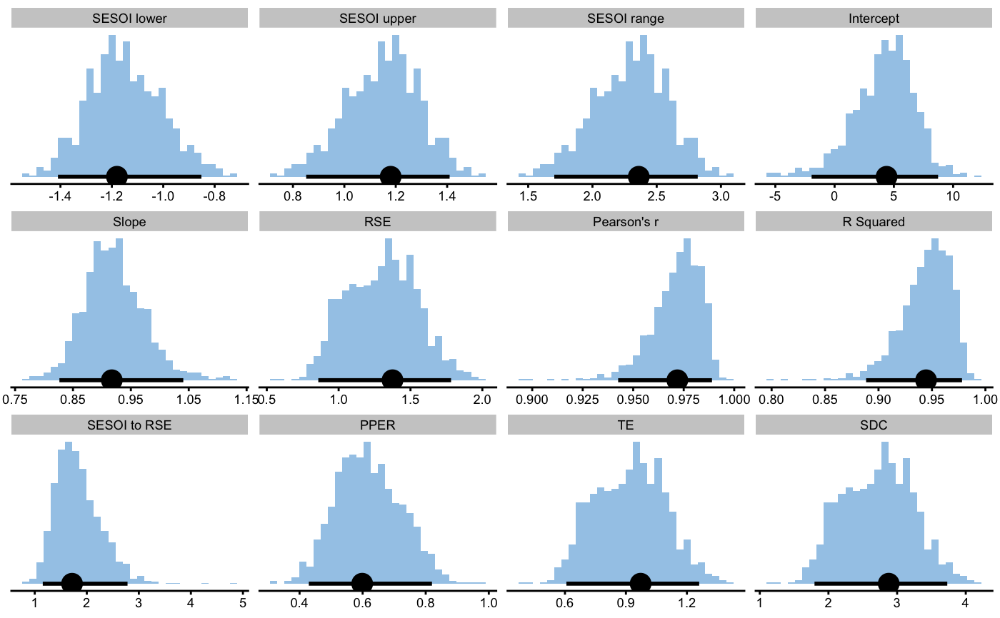

reliability_analysis represents a wrapper function for the bmbstats function.
reliability_analysis runs the bootstrap reliability analysis of the data data frame using
estimator_function to return the estimators
reliability_analysis( data, trial1, trial2, SESOI_lower = SESOI_lower_reliability_func, SESOI_upper = SESOI_upper_reliability_func, estimator_function = reliability_estimators, control = model_control(), na.rm = FALSE )
| data | Data frame |
|---|---|
| trial1 | Character vector indicating column name in the |
| trial2 | Character vector indicating column name(s) in the |
| SESOI_lower | Function or numeric scalar. Default is |
| SESOI_upper | Function or numeric scalar. Default is |
| estimator_function | Function for providing reliability estimators. Default is |
| control | Control object returned from |
| na.rm | Should NAs be removed? Default is |
Object of class bmbstats
data("agreement_data") rel_analysis <- reliability_analysis( data = agreement_data, trial1 = "Practical_score.trial1", trial2 = "Practical_score.trial2", control = model_control( boot_type = "perc", boot_samples = 1000, seed = 1667 ) )#>#>#>rel_analysis#> Bootstrap with 1000 resamples and 95% perc confidence intervals. #> #> estimator value lower upper #> SESOI lower -1.1237299 -1.3492171 -0.8018730 #> SESOI upper 1.1237299 0.8018730 1.3492171 #> SESOI range 2.2474598 1.6037460 2.6984342 #> Intercept 2.1787325 -0.9729034 4.3996400 #> Slope 0.9560994 0.9057595 1.0205277 #> RSE 0.7030061 0.4421781 0.8916434 #> Pearson's r 0.9922361 0.9835438 0.9970358 #> R Squared 0.9845326 0.9673585 0.9940804 #> SESOI to RSE 3.1969278 2.1452492 5.2030798 #> PPER 0.8735628 0.7031250 0.9824709 #> TE 0.4971004 0.3126671 0.6304871 #> SDC 1.4714087 0.9254894 1.8662311plot(rel_analysis)